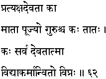
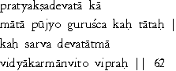

|

|
Verse 62 - Meaning:
Q:Who (kaa) is the visible God (pratyaksha Devataa) for one ?
A:The mother (maataa) that bore one.
Q:Who is (kah-ca) the elder (guru) that should always be respected ? (puujyo)
A:One's father. (taatah)
Q:Who (kah) is the embodiment (atma) of all (sarva) divinities (devata) ?
A:A wise man who has achieved the fulfilment (anvito-viprah) of all learning (vidya) and holy acts. (karma)
|